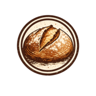

Kalkulator for eltefritt brød
≈ 500 g mel · ~800 g ferdig brød
Jerngryte 4–4,5 L (23–24 cm), eller brødform 2 L. Banneton 23 cm rundt (valgfritt)
Mer vann = åpnere krumme, men klissete deig. Anbefaling justeres med meltype.
Standard. 0,23% gir 14 t god heving ved 21 °C.
Lang bulkheving + kort etterheving før steking.
Følger romtemp som standard. Varmt vann gir hodestart i bulkhevingen, så modellen kompenserer ved å redusere gjær. Hold under 40 °C; over det skades gjær og surdeig.
12–18 timer gir best smak og struktur. Kortere tid krever mer gjær.
Lengre tid i kjøleskap = dypere smak og enklere håndtering. 12–24 t er typisk.
% av total mel. Forutsetter aktiv, 100%-hydrert starter (peak ~4–8 t etter mating). Anbefalt bulk-tid (~11 t ved 20% / 21°C) er et utgangspunkt; faktisk tid varierer ±25% med starter-styrke.